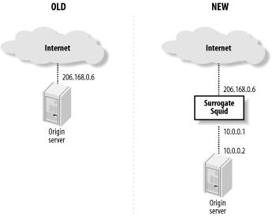

第15章 服务加速模式
15.1 概述
假如你已在某台机器上运行了原始服务器，就必须将它移到不同的IP地址或TCP端口。例如，可以这样做：(1)在独立的主机上安装squid；(2)给原始服务器分配一个新的IP地址；(3)将旧的IP地址分配给squid。为了安全起见，在squid和后台服务器通信的链路上，可使用私网地址。见图15-1。
Figure 15-1. How to replace your origin server with Squid
另一个方法是配置squid成HTTP拦截，见第9章的描述。例如，可以配置离原始服务器最近的路由器或交换机，拦截HTTP请求，将其驱向squid。
假如你资源有限，不能将squid运行在独立的系统上，就可以让它随着HTTP服务一起运行。然而，这2个应用不能共享相同的IP地址和端口号。必须将后台服务绑定在不同的地址（例如127.0.0.1）或将它移到另一个端口。看起来改变端口最容易，但我推荐改变IP地址。
改变端口可能会带来问题。例如，当后台服务产生错误消息时，它可能会泄露错误的端口。更糟的是，假如服务产生一个HTTP重定向，它典型的将非标准端口号追加到Location URI后面。
HTTP/1.1 301 Moved Permanently
Date: Mon, 29 Sep 2003 03:36:13 GMT
Server: Apache/1.3.26 (Unix)
Location: http://www.squid-cache.org:81/Doc/
假如客户端接受到这样的响应，它会发起连接到非标准断口（81），这样就绕过了服务加速器。假如你必须让squid和后台服务运行在同一主机上，那最好让后台服务侦听在本地回路地址上(127.0.0.1)。在apache上，可以这样做：
BindAddress 127.0.0.1 ServerName www.squid-cache.org
一旦你决定如何重新部署原始服务器，下一步就是配置squid。
15.2 配置Squid
技术上，一个单一的配置文件指令，足以让squid从cache代理状态转换到加速状态。不幸的是，生活总非如此简单。因为许多组织的web服务器以不同方法实现，所以squid也有很多指令要考虑。
15.2.1 http_port
一般squid仅对80端口的HTTP服务加速。使用http_port指令让squid侦听在该端口：
http_port 80
假如想让squid既作cache代理，又作加速器，那么列出这2个端口：
http_port 80 http_port 3128
你也可以配置客户端发送代理请求到80端口，但我强烈不鼓励那样做。使用独立的端口，假如以后必要，你可以更容易将2个服务迁移到不同的主机上。
15.2.2 https_port
可以配置squid来处理加密的HTTP（SSL和TLS）连接。该功能要求在运行./configure时，激活--enable-ssl选项。在该模式下，squid解密来自客户端的SSL/TLS连接，并将未加密的请求转发到后台服务器。https_port指令有如下格式：
https_port [host:]port cert=certificate.pem [key=key.pem] [version=1-4]
[cipher=list] [options=list]
cert和key参数是OpenSSL兼容的证书和私钥文件的路径。假如忽略了key参数，OpenSSL库会在证书文件里寻找私钥。
可选的version参数指定支持何种SSL/TLS协议：1为自动选择，2为支持SSLv2，3为支持SSLv3，4为支持TLSv1。
可选的cipher参数是冒号分隔的密码列表。squid简单的将它传递给SSL_CTX_set_cipher_list( )函数。更多信息，请阅读系统中的ciphers(1) manpage，或试着运行：openssl ciphers.
可选的options参数是冒号分隔的OpenSSL选项列表。squid简单的将它传递给SSL_CTX_set_options( )函数。更多信息，请阅读系统中的SSL_CTX_set_options(3) manpage。
如下是一些https_port行的示例：
https_port 443 cert=/usr/local/etc/certs/squid.cert https_port 443 cert=/usr/local/etc/certs/squid.cert version=2 https_port 443 cert=/usr/local/etc/certs/squid.cert cipher=SHA1 https_port 443 cert=/usr/local/etc/certs/squid.cert options=MICROSOFT_SESS_ID_BUG
15.2.3 httpd_accel_host
在这里告诉squid后台服务器的IP地址或主机名。假如后台服务器使用前面描述的本地环路地址，那么这样写：
httpd_accel_host 127.0.0.1
Squid会预先将这个值作为要加速的URI。它也会改变Host头部的值。例如，假如客户端发起这样的请求：
GET /index.html HTTP/1.1 Host: squidbook.org
Squid会将它改变成这个形式：
GET http://127.0.0.1/index.html HTTP/1.1 Host: 127.0.0.1
你可以看到，请求不再包含对squidbook.org的任何信息。只要后台服务没有配置成多域虚拟主机，这样做就不会有问题。
假如想让squid使用原始服务器的主机名，那么可将它放在httpd_accel_host指令里：
httpd_accel_host squidbook.org
这样请求如下：
GET http://squidbook.org/index.html HTTP/1.1 Host: squidbook.org
另一个选项是激活httpd_accel_uses_host_header指令。这时squid对大部分请求，会将Host头部插入URI里；仅对那些缺少Host头部的请求，squid才使用httpd_accel_host值。
当使用主机名时，squid通过正常途径来查询其IP地址。因为期望该主机名被解析到2个不同的地址（一个是客户端连接到squid的地址，另一个是squid连接到后台服务器的地址），你应该增加静态的DNS接口到系统的/etc/hosts文件里。例如：
127.0.0.1 squidbook.org
也可以使用重定向器代替。例如，可以编写一个简单的perl程序，将http://squidbook.org/...改变为http://127.0.0.1/... 见11章关于重定向客户请求的具体细节。
httpd_accel_host指令有1个特殊值。假如将它设为virtual，在Host头部丢失时，squid将原始服务器的IP地址插入URI里。然而，该功能仅在使用HTTP拦截时有用。
15.2.4 httpd_accel_port
该指令告诉squid后台服务器的端口号。默认是80。不必改变该值，除非后台服务器运行在不同端口。如下是示例：
httpd_accel_port 8080
假如在多个端口上加速原始服务器，可以将该值设为0。在该情形下，squid从Host头部里获取端口号。
15.2.5 httpd_accel_uses_host_header
该指令控制squid如何决定它插入加速URI里的主机名。假如激活了，请求里的Host头部值，会优先于httpd_accel_host值。
httpd_accel_uses_host_header指令与后台服务器上运行的虚拟域配合工作。假如后台服务器仅处理1个域，那么可禁用它。然而，假如你在加速多个域名，就请打开它：
httpd_accel_uses_host_header on
假如激活了httpd_accel_uses_host_header指令，记得要配置一些本章后面描述的访问控制。为什么要这样做？请考虑如下配置：
httpd_accel_host does.not.exist httpd_accel_uses_host_header on
因为大多数请求有Host头部，squid会忽略掉httpd_accel_host设置，很少将does.not.exist名字插入到URI里。那些非常聪明的假冒HTTP请求的人，会让squid从加速模式进入cache代理模式。假如我知道你正在使用squid作为加速器，并且没有正确的访问控制，那我能发送这样的请求：
GET /index.html HTTP/1.1 Host: www.mrcranky.com
假如你已经激活了httpd_accel_uses_host_header，并且没有任何基于目的地址的访问控制，squid会转发这个请求到www.mrcranky.com 。阅读15.4章，配置访问控制，以确保squid不会与外部原始服务器会话。
15.2.6 httpd_accel_single_host
前面的httpd_accel_uses_host_header指令决定squid插入URI里的主机名，这里的指令决定squid转发它的cache丢失到哪里。默认的（httpd_accel_single_host 禁止），squid转发cache丢失到URI里的主机。假如URI里包含主机名，squid执行DNS查询来获取后台服务器的IP地址。
当激活了httpd_accel_single_host时，squid总是转发cache丢失到httpd_accel_host里定义的主机。换句话说，URI里的内容和Host头部不会影响到转发决定。也许激活该指令的最好的理由是避免DNS查询。简单的将httpd_accel_host设置为后台服务器的IP地址。激活它的另一个理由是假如你有其他设备（负载均衡器，病毒扫描器等）在squid和后台服务器之间。你可以让squid转发请求到这样的设备，不用对HTTP请求作任何改变。
注意同时激活httpd_accel_single_host和httpd_accel_uses_host_header是危险的，可能让攻击者破坏cache。考虑如下配置：
httpd_accel_single_host on httpd_accel_host 172.16.1.1 httpd_accel_uses_host_header on
和这样的HTTP请求：
GET /index.html HTTP/1.0 Host: www.othersite.com
Squid将请求转发到172.16.1.1的后台服务器，但存储响应在URI http://www.othersite.com/index.html下。既然172.16.1.1实际上并非www.othersite.com，squid现在包含了对该URI的伪响应。假如激活了httpd_accel_with_proxy（下一节的），或者cache参与了某个层叠，它可能对信任用户发布坏的响应。为了阻止这样的滥用，记得阅读15.4章。
假如使用了httpd_accel_single_host指令，服务端持久连接可能不能工作。这是因为squid存储空闲连接在原始服务器主机名下面，但连接建立代码会查找由httpd_accel_host值命名的空闲连接。假如2个值不同，squid查找相应的空闲连接会失败。在超时后，空闲连接关闭，不会被重用。可以用server_persistent_connections指令（见附录A）来禁止服务端持久连接，就避免了这个小问题。
15.2.7 httpd_accel_with_proxy
默认的，无论何时你激活了httpd_accel_host指令，squid进入加速模式。那就是说，它拒绝代理http请求，仅仅接受加速请求，就好像它真正是原始服务器一样。squid也禁用了ICP端口（但不是HTCP，如果你激活它的话）。假如想让squid既接受加速请求又接受代理请求，请激活这个指令：
httpd_accel_with_proxy on
15.3 令人疑惑之处
诚然，杂乱的配置让我也疑惑。让我们换种方法来看它。实际使用的配置，依赖于有多少后台服务器，以及需要加速多少原始服务器主机名。让我们考虑如下4个独立的案例。
15.3.1 一个主机，一个主机名
这是最简单的配置。因为你只有一个主机和一个主机名，Host头部就无关紧要。可以这样做：
httpd_accel_host www.example.com httpd_accel_single_host on httpd_accel_uses_host_header off
假如愿意，可以在httpd_accel_host后使用IP地址，尽管它将出现在access.log的URI里。
15.3.2 一个主机，多个主机名
因为有多个虚拟主机的主机名，Host头部就变得重要。我们想让squid将它插入转发URI里。这样配置：
httpd_accel_host www.example.com httpd_accel_single_host on httpd_accel_uses_host_header on
在该情形下，squid基于Host头部产生URI。假如缺少Host头部，squid会插入www.example.com。假如愿意，你可以禁止httpd_accel_single_host。跟前面一样，可在httpd_accel_host后使用IP地址，以避免DNS查询。
15.3.3 多个主机，一个主机名
这点听起来象负载均衡配置。实现它的方法之一是，对多个IP地址的后台服务器创建一个DNS名字。对每个cache丢失，squid会轮循请求所有后台地址。在该情形下，squid配置与单主机/单主机名的情况一样：
httpd_accel_host roundrobin.example.com httpd_accel_single_host on httpd_accel_uses_host_header off
唯一不同之处是httpd_accel_host名被解析到多个IP地址。在BIND zone文件里，DNS配置可能看起来如下：
$ORIGIN example.com.
roundrobin IN A 192.168.1.2
IN A 192.168.1.3
IN A 192.168.1.4
在这样的DNS配置里，squid每次打开到roundrobin.example.com的新连接时，都使用列表里的下一个地址。当抵达列表末尾时，又会从头开始。注意squid内在的根据TTLs来缓存DNS响应。对每次DNS查询，不能依赖于名字服务器以不同顺序返回地址列表。
另一个选择是使用重定向器（见11章）来选择后台服务器。可以编写一个简单的脚本，将URI主机名（例如roundrobin.example.com）替换成不同的主机名或IP地址。如果重定向器足够智能，它甚至可以基于后台服务器的当前状态来进行选择。使用下列配置：
httpd_accel_host roundrobin.example.com httpd_accel_single_host off httpd_accel_uses_host_header off
15.3.4 多个主机，多个主机名
在该情形下，要使用Host头部。也要让squid基于原始服务器名字（例如，一个DNS查询）来选择后台服务器。配置如下：
httpd_accel_host www.example.com httpd_accel_single_host off httpd_accel_uses_host_header on
也许你凭错觉将httpd_accel_host设为virtual。然而，除非使用HTTP拦截，否则那将是一个错误。
15.4 访问控制
典型配置的加速器接受来自整个Internet的HTTP请求。然而这不意味着，可以忘记访问控制。你不应该让squid接受指向外部原始服务器的请求。唯一的例外是当你激活了httpd_accel_with_proxy时。
对仅作为加速器的配置，请使用目的基础的访问控制。例如，dst类型可执行这个任务：
acl All src 0/0
acl TheOriginServer dst 192.168.3.2
http_access allow TheOriginServer
http_access deny All
另外，假如愿意，可使用dstdomain ACL：
acl All src 0/0
acl TheOriginServer dstdomain www.squidbook.org
http_access allow TheOriginServer
http_access deny All
注意激活了httpd_accel_single_host某种程度上绕过了访问控制规则。这是因为在squid执行了访问控制检测后，原始服务器域（例如httpd_accel_host值）才被设置。
若在单个squid实例里，既使用加速模式又使用代理模式，访问控制会变得很麻烦。你不能简单的拒绝到外部原始服务器的所有请求。然而你能确保外部用户不允许对任意原始主机发起代理请求。例如：
acl All src 0/0
acl ProxyUsers src 10.2.0.0/16
acl TheOriginServer dst 192.168.3.2
http_access allow ProxyUsers
http_access allow TheOriginServer
http_access deny All
可以在访问控制规则里使用本地端口号。它实际上不会真正保护squid不被滥用，但确实能保证，例如，用户代理发送其代理请求到正确的端口。这点也让你以后可以方便的将加速服务和代理服务分拆到独立的主机上。假设配置squid侦听在80和3128端口，可以使用：
acl All src 0/0
acl ProxyPort myport 3128
acl ProxyUsers src 10.2.0.0/16
acl SurrogatePort myport 80
acl TheOriginServer dst 192.168.3.2
http_access allow ProxyUsers ProxyPort
http_access allow TheOriginServer SurrogatePort
http_access deny All
不幸的是，若同时激活了httpd_accel_single_host, httpd_accel_uses_host_header, 和httpd_accel_with_proxy，则这些访问控制规则不能阻止用户破坏cache的企图。这是因为有效的代理请求：
GET http://www.bad.site/ HTTP/1.1 Host: www.bad.site
和假的加速请求：
GET / HTTP/1.1 Host: www.bad.site
有同样的访问控制结果，但被转发到不同的服务器。它们有相同的访问控制结果是因为，在squid重写了加速请求后，它有和代理请求相同的URI。然而，它们不会被送到同一地方。加速请求到达由httpd_accel_host定义的服务器，因为激活了httpd_accel_single_host。
可以采取步骤来解决这个问题。确保后台服务器对未知的服务名（例如，Host头部指向非本地服务）产生一个错误。然而，最好不要同时运行squid作为加速和代理服务。
15.5 内容协商
近来的squid版本支持HTTP/1.1 Vary头部。假如后台服务器使用内容协商，这就是个好消息。例如，它能依赖于哪种web浏览器发起请求（User-Agent头部），或基于用户语言参数（Accept-Language头部），来发送不同的响应。
当对某URI的响应基于请求行为而变化时，原始（后台）服务器包含了一个Vary头部。该头部包含用于选择变量的请求头部列表。这些是selecting头部。当squid接受到带有Vary头部的响应时，在它产生内部cache key过程中，会包含这个selecting头部值。这样，随后而来的带有同样selecting头部值的请求会产生cache命中。
假如在运行./configure时，使用了 —enable-x-accelerator-vary选项，squid会查找一个名为X-Accelerator-Vary的响应头部。squid严格的把这个头部和Vary头部一样对待。然而，因为这是个扩展头部，它被下游用户代理忽略。它本质上提供一个方法，用于squid和后台服务器之间的私有内容协商。为了使用它，你也必须修改服务应用，以使其在响应里发送这个头部。我不知道该头部在何种情形下有用。假如你服务于协商响应，你也许该使用标准的Vary头部，以便所有的用户代理知道什么在进行。
15.6 补充
使用squid作为加速器可能改进原始服务器的安全和性能。然而，也有一些潜在的消极影响。请记住如下事情。
15.6.1 日志
当使用加速器时，原始服务器的访问日志仅包含了来自squid的cache丢失。并且，这些日志文件只记录了squid的IP地址，而不是客户端的。换句话说，squid的access.log才是所有有用信息的存放之处。
回想一下，squid默认不使用通用日志文件格式。可以使用emulate_httpd_log指令，来让squid的access.log看起来象Apache的默认日志文件格式。
15.6.2 忽略Reload
大部分浏览器的reload按钮产生带Cache-Control: no-cache指令的HTTP请求。虽然这点对客户端缓存代理来说很有用，但它可能破坏squid加速器的性能。假如后台服务器负载很高，这点尤其明显。reload请求强迫squid刷新当前cache响应，并从原始服务器重新获取新的响应。假如原始服务器的响应抵达很慢，squid会耗费超出正常数量的文件描述符和网络资源。
为了解决这个问题，可使用refresh_pattern的一个选项。当设置了ignore-reload选项时，squid假装请求没有包含no-cache指令。ignore-reload选项对加速器来说通常是安全的，尽管它在技术上确实违背了HTTP协议。
为了让squid忽略所有请求里的reload，在squid.conf里这样写：
refresh_pattern . 0 20% 4320 ignore-reload
其他的一种更安全的选择，你可以使用reload-into-ims选项。当请求包含no-cache时，它导致squid去验证其cache响应。然而请注意，这点仅在响应有cache验证选项（例如Last-Modified时间戳）时才能工作。
15.6.3 不可cache的内容
作为加速器，squid对来自后台服务器的cache响应，遵从标准HTTP头部规范。这意味着，例如，某些动态响应可能不被cache。你也许想使用refresh_pattern指令来强迫cache这些目标。例如：
refresh_pattern \.dhtml$ 60 80% 180
这样的欺骗仅对某些类型的响应有效，也就是说，那些没有Last-Modified或Expires头部的响应。squid默认不cache这样的响应。然而，在refresh_pattern规则里使用非零的最小时间，会让squid去cache这些响应，并在该数量的时间范围内，将响应作为cache命中处理。请见7.7章的细节。
假如后台服务器产生其他类型的不可cache响应，你也许不能欺骗squid来缓存它们。
15.6.4 错误
把squid作为原始服务器前面的加速器，你应该知道站点访问者有可能见到squid产生的错误消息，而不是原始服务器产生的。换句话说，你的squid的用法通过某些错误消息可能会暴露出来。例如，当squid解析客户HTTP请求失败时，它会返回自己的错误消息，假如请求不完整或畸形构造，就可能发生这种情况。若squid因为某些理由不能连接到后台服务器，它也会返回错误消息。
如果站点调整得好，可能不必担心squid的错误消息。虽然如此，你也应该经常仔细观察access.log，看看有何错误；任何错误，都有可能被你的用户看到。
15.6.5 刷新目标
在操作加速器时，你也许发现PURGE方式特别有用。如果你对服务的内容有良好理解，就该知道何时cache目标必须被刷新。刷新目标的技术跟我以前提过的一样。请见7.6章的细节。
15.6.6 邻居
尽管我不推荐，你仍可以配置squid作为加速器，并且作为cache层叠的一部分。假如选择了如此部署，请注意，squid默认转发cache丢失到父cache（而不是后台服务器）。假如这不是你想要的，请确保使用cache_peer_access指令，以便对后台服务器的请求不会抵达邻居cache。